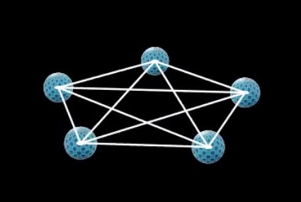

Overview
This project is an interactive desktop tool for building and analyzing Local Operations and Classical Communication (LOCC) protocols. It allows users to specify multi-party quantum states, define local operations, and track how entanglement evolves under measurement and classical communication.
Architecture
The application was structured using an MVC (Model–View–Controller) architecture to separate quantum state modeling, GUI interaction, and visualization logic. The controller layer coordinates user inputs, quantum state updates, and rendering.
The GUI was implemented using PyQt, while the quantum modeling layer integrates numerical state manipulation and entanglement calculations.
Visualization with Manim
A dedicated animation pipeline was built using Manim to visualize state evolution, protocol steps, and entanglement measures. This allows abstract LOCC operations to be translated into interpretable graphical outputs.

Engineering Takeaways
This project required integrating quantum information theory with GUI design and animation tooling. It strengthened my understanding of entanglement structure, state evolution under local operations, and the importance of clean software architecture for scientific tools.
Environment management was also a key part of development, including resolving Python–Manim compatibility constraints and maintaining reproducible builds for the animation pipeline.